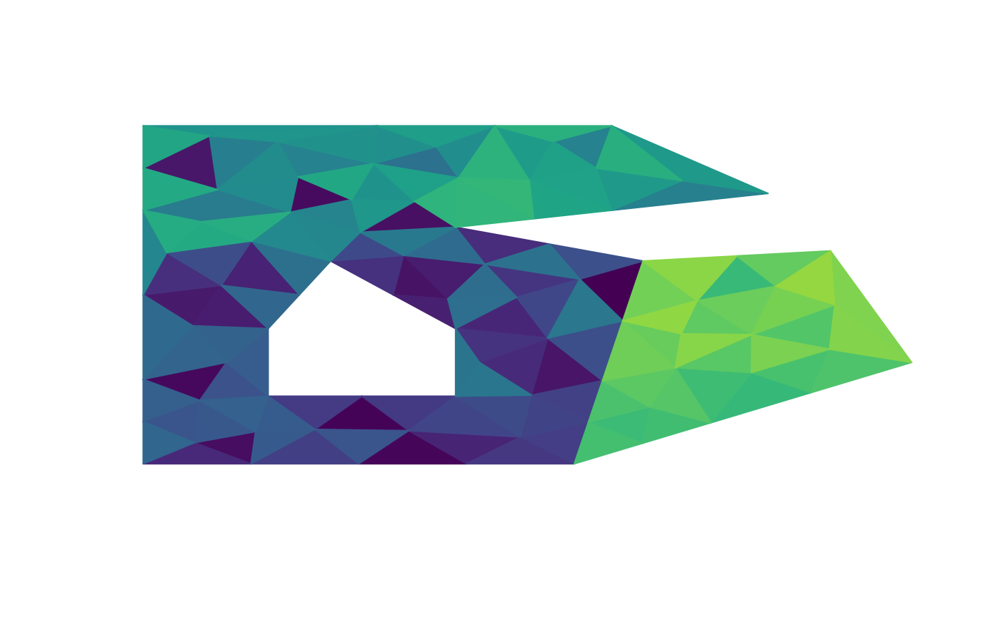
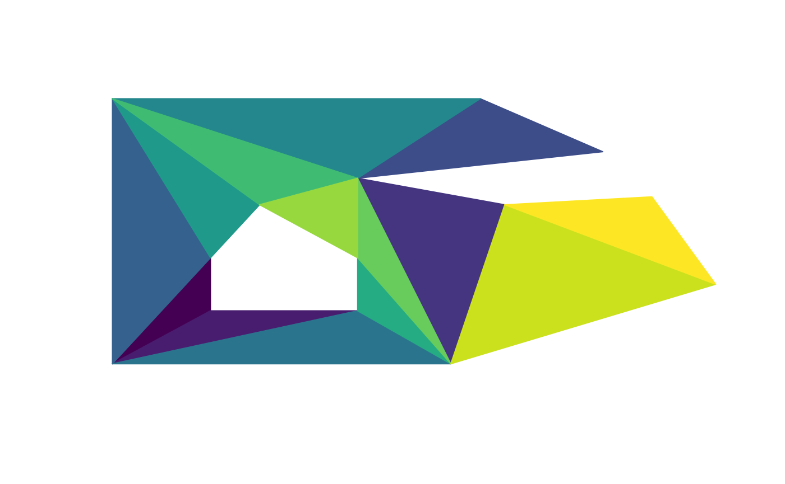

library(anglr)
#> Warning in rgl.init(initValue, onlyNULL): RGL: unable to open X11 display
#> Warning: 'rgl.init' failed, running with 'rgl.useNULL = TRUE'.The anglr package is about data structures and 3D visualization.
Key aspects of data structures are:
All of these aspects are related to ease of visualization and
flexibility. The anglr package extends the core silicate data
structures SC, SC0, PATH, PATH0, TRI, and TRI0 with models DEL, DEL0
and QUAD.
DEL() and DEL0() provide high-quality
Delaunay-constrained edge-based triangulations for a wide variety of
inputs. Polygon layers can be triangulated into mesh structures while
maintaining all internal shape consistency and attribute metadata.
QUAD() provides an efficient representation of raster data,
it is quite experimental and only works within a limited set of
workflows in anglr.
There is no single best data structure for all applications, and so as much as possible the models (SC, SC0, PATH, PATH0, TRI, TRI0, ARC, DEL, DEL0, and QUAD) are interoperable and will endeavour to maintain the input information and simply interpret it in terms of the desired format. Not all pathways are possible or sensible, but it depends on the required application and the form of the input data, so the key feature is flexibility and control.
As well as the data structure models, anglr includes the following visualization functions.
Each of these will attempt to convert any given input to an appropriate type, not all are sensible but we have attempted to err on the side of convenience.
Object, vertex, meta, and primitives and link tables for relational models.
Embedded index list topology_ for structural
models.
library(anglr)
library(silicate)
#>
#> Attaching package: 'silicate'
#> The following object is masked from 'package:stats':
#>
#> filter
data("minimal_mesh", package = "silicate")
DEL(minimal_mesh)
#> class : DEL
#> type : Primitive
#> vertices : 14 (2-space)
#> primitives : 20 (2-space)
#> crs : NA
DEL0(minimal_mesh)
#> class : DEL0
#> type : Primitive
#> vertices : 14 (2-space)
#> primitives : 14 (2-space)
#> crs : NAA triangulation preserves its original polygon identity, plotting in 2D in the obvious way.
But, because under the hood it is composed of simple primitives we can address them by separate colours.
The density can be controlled by setting max_area (other
controls are available via arguments to [RTriangle::triangulate]). Note
that we now have new vertices that did not exist in the original polygon
layer, both internal to the surface of the polygon and along its
boundary. This is the “mesh-quality” aspect mentioned above.
mesh1 <- DEL(minimal_mesh, max_area = 0.01)
mesh_plot(mesh1, col = viridis::viridis(nrow(mesh1$triangle)))
In the silicate package, we only have access to ear-cutting
triangulations, with the TRI() or TRI0()
function.

(Note that “high” or “low” quality of a triangulation really depends on the requirements for the task, but this is a real mathematical quantity with a strong theoretical basis).
For our purposes, primarily we want denser meshes because they will look better in 3D when combined with other data that varies in z as well as x-y.
The 3D plot functions are very flexible.
wire3d(mesh1)
#rgl::snapshot3d("wire.png")wire 3d